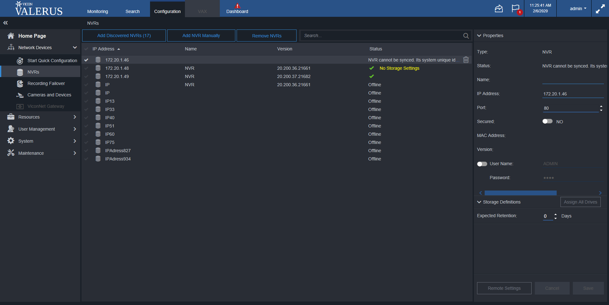

Total Tests
Total Steps
Total Time Taken (Current Run)
7h 46m 2s+287ms
Total Time Taken (Overall)
7h 46m 2s+287ms
Start
2020-02-04 19:25:34
End
2020-02-05 03:11:36
Pass Percentage
Environment
| Param | Value |
|---|---|
| User Name | popatb |
| OS | Windows 10 |
| Java Version | 1.8.0_202 |
| Host Name | BORSE-PC |
Tests
-
ChangeIPAdressExitCancelUnsavedChangesTest fail2020-02-04 21:04:30 2020-02-04 21:07:31 0h 3m 1s+154ms
Status Timestamp Details 21:04:30 If status for NVR 172.20.1.46 isn't 'Online' than delete it 21:04:34 If NVR 172.20.1.46 isn't exist - add it 21:07:11 Changing NVR IP Adress from 172.20.1.46 to IP23 and press 'Cancel' 21:07:14 Check that Cancel button is enable after name changes 21:07:14 Check that Save button is enable after name changes 21:07:31 Check that change isn't saved 21:07:31 java.lang.AssertionError: expected [172.20.1.46IP23] but found [IP23] at org.testng.Assert.fail(Assert.java:97) at org.testng.Assert.assertEqualsImpl(Assert.java:136) at org.testng.Assert.assertEquals(Assert.java:118) at org.testng.Assert.assertEquals(Assert.java:575) at org.testng.Assert.assertEquals(Assert.java:585) at testcases.NVRsElementsTest.ChangeIPAdressExitCancelUnsavedChangesTest(NVRsElementsTest.java:377) at sun.reflect.NativeMethodAccessorImpl.invoke0(Native Method) at sun.reflect.NativeMethodAccessorImpl.invoke(NativeMethodAccessorImpl.java:62) at sun.reflect.DelegatingMethodAccessorImpl.invoke(DelegatingMethodAccessorImpl.java:43) at java.lang.reflect.Method.invoke(Method.java:498) at org.testng.internal.MethodInvocationHelper.invokeMethod(MethodInvocationHelper.java:133) at org.testng.internal.TestInvoker.invokeMethod(TestInvoker.java:584) at org.testng.internal.TestInvoker.invokeTestMethod(TestInvoker.java:172) at org.testng.internal.MethodRunner.runInSequence(MethodRunner.java:46) at org.testng.internal.TestInvoker$MethodInvocationAgent.invoke(TestInvoker.java:804) at org.testng.internal.TestInvoker.invokeTestMethods(TestInvoker.java:145) at org.testng.internal.TestMethodWorker.invokeTestMethods(TestMethodWorker.java:146) at org.testng.internal.TestMethodWorker.run(TestMethodWorker.java:128) at java.util.ArrayList.forEach(ArrayList.java:1257) at org.testng.TestRunner.privateRun(TestRunner.java:770) at org.testng.TestRunner.run(TestRunner.java:591) at org.testng.SuiteRunner.runTest(SuiteRunner.java:402) at org.testng.SuiteRunner.runSequentially(SuiteRunner.java:396) at org.testng.SuiteRunner.privateRun(SuiteRunner.java:355) at org.testng.SuiteRunner.run(SuiteRunner.java:304) at org.testng.SuiteRunnerWorker.runSuite(SuiteRunnerWorker.java:53) at org.testng.SuiteRunnerWorker.run(SuiteRunnerWorker.java:96) at org.testng.TestNG.runSuitesSequentially(TestNG.java:1180) at org.testng.TestNG.runSuitesLocally(TestNG.java:1102) at org.testng.TestNG.runSuites(TestNG.java:1032) at org.testng.TestNG.run(TestNG.java:1000) at org.testng.remote.AbstractRemoteTestNG.run(AbstractRemoteTestNG.java:115) at org.testng.remote.RemoteTestNG.initAndRun(RemoteTestNG.java:251) at org.testng.remote.RemoteTestNG.main(RemoteTestNG.java:77)
21:07:31 Screenshot is below: 
-
ChangeIPAdressExitPressDontSaveUnsavedChangesTest pass2020-02-04 21:08:42 2020-02-04 21:09:52 0h 1m 9s+905ms
Status Timestamp Details 21:08:42 If status for NVR 172.20.1.46 isn't 'Online' than delete it 21:08:43 If NVR 172.20.1.46 isn't exist - add it 21:08:44 Changing NVR IP Adress from 172.20.1.46 to 172.20.1.46IP36 and press 'Do not save' on the 'Unsaved changes' window 21:08:47 Change IP address 172.20.1.46 to 172.20.1.46IP36 21:08:50 Check that Cancel button is enable after name changes 21:08:51 Check that Save button is enable after name changes 21:08:51 Go to Monitoring page 21:08:55 Press don't save button on unsaved changes dialog 21:09:10 Check that Monitoring page is loaded 21:09:11 Go to NVRs page 21:09:32 Click on the device 172.20.1.46 21:09:34 Check that change isn't saved 21:09:34 Refresh page 21:09:49 Click on the device 172.20.1.46 21:09:52 Check that change isn't saved after refresh 21:09:52 Test is passed -
ChangeIPAdressExitPressSaveUnsavedChangesTest fail2020-02-04 21:10:48 2020-02-04 21:14:40 0h 3m 52s+533ms
Status Timestamp Details 21:10:48 If status for NVR 172.20.1.46 isn't 'Online' than delete it 21:11:07 If NVR 172.20.1.46 isn't exist - add it 21:13:01 Changing NVR IP Adress from 172.20.1.46 to IP40 and press 'Save' on the 'Unsaved changes' window 21:13:55 Check that Cancel button is enable after name changes 21:13:56 Check that Save button is enable after name changes 21:14:14 Check that Search page is loaded 21:14:40 java.lang.NullPointerException at testcases.NVRsElementsTest.ChangeIPAdressExitPressSaveUnsavedChangesTest(NVRsElementsTest.java:472) at sun.reflect.NativeMethodAccessorImpl.invoke0(Native Method) at sun.reflect.NativeMethodAccessorImpl.invoke(NativeMethodAccessorImpl.java:62) at sun.reflect.DelegatingMethodAccessorImpl.invoke(DelegatingMethodAccessorImpl.java:43) at java.lang.reflect.Method.invoke(Method.java:498) at org.testng.internal.MethodInvocationHelper.invokeMethod(MethodInvocationHelper.java:133) at org.testng.internal.TestInvoker.invokeMethod(TestInvoker.java:584) at org.testng.internal.TestInvoker.invokeTestMethod(TestInvoker.java:172) at org.testng.internal.MethodRunner.runInSequence(MethodRunner.java:46) at org.testng.internal.TestInvoker$MethodInvocationAgent.invoke(TestInvoker.java:804) at org.testng.internal.TestInvoker.invokeTestMethods(TestInvoker.java:145) at org.testng.internal.TestMethodWorker.invokeTestMethods(TestMethodWorker.java:146) at org.testng.internal.TestMethodWorker.run(TestMethodWorker.java:128) at java.util.ArrayList.forEach(ArrayList.java:1257) at org.testng.TestRunner.privateRun(TestRunner.java:770) at org.testng.TestRunner.run(TestRunner.java:591) at org.testng.SuiteRunner.runTest(SuiteRunner.java:402) at org.testng.SuiteRunner.runSequentially(SuiteRunner.java:396) at org.testng.SuiteRunner.privateRun(SuiteRunner.java:355) at org.testng.SuiteRunner.run(SuiteRunner.java:304) at org.testng.SuiteRunnerWorker.runSuite(SuiteRunnerWorker.java:53) at org.testng.SuiteRunnerWorker.run(SuiteRunnerWorker.java:96) at org.testng.TestNG.runSuitesSequentially(TestNG.java:1180) at org.testng.TestNG.runSuitesLocally(TestNG.java:1102) at org.testng.TestNG.runSuites(TestNG.java:1032) at org.testng.TestNG.run(TestNG.java:1000) at org.testng.remote.AbstractRemoteTestNG.run(AbstractRemoteTestNG.java:115) at org.testng.remote.RemoteTestNG.initAndRun(RemoteTestNG.java:251) at org.testng.remote.RemoteTestNG.main(RemoteTestNG.java:77)
21:14:40 Screenshot is below: 
-
ChangeIPAdressPressCancelExitTest pass2020-02-04 21:15:37 2020-02-04 21:18:41 0h 3m 3s+722ms
Status Timestamp Details 21:15:37 If status for NVR 172.20.1.46 isn't 'Online' than delete it 21:15:41 If NVR 172.20.1.46 isn't exist - add it 21:17:29 Changing NVR IP Adress from 172.20.1.46 to 172.20.1.46IP16 and press 'Cancel' 21:18:22 Check that Cancel button is enable after name changes 21:18:23 Check that Save button is enable after name changes 21:18:23 Check that the IP Adress isn't changed 21:18:41 Check that the IP Adress isn't changed after refresh 21:18:41 Test is passed -
ChangeNameExitPressDontSaveUnsavedChangesTest pass2020-02-04 21:47:06 2020-02-04 21:48:13 0h 1m 7s+624ms
Status Timestamp Details 21:47:06 Changing NVR name from 172.20.1.46 to 172.20.1.46Changed21and pressing 'Do not save' on the 'Unsaved changes' window 21:47:11 Check that Cancel button is enable after name changes 21:47:11 Check that Save button is enable after name changes 21:47:12 Go to Monitoring page 21:47:15 Press don't save button on unsaved changes dialog 21:47:30 Check that Monitoring page is loaded 21:47:30 Go to NVR page 21:47:52 Click on NVR 172.20.1.46 21:47:55 Check that change isn't saved 21:48:10 Click on NVR 172.20.1.46 21:48:13 Check that change isn't saved after refresh 21:48:13 Test is passed -
ChangeNameExitPressSaveUnsavedChangesTest pass2020-02-04 21:49:25 2020-02-04 21:53:37 0h 4m 11s+613ms
Status Timestamp Details 21:49:25 If status for NVR 172.20.1.46 isn't 'Online' than delete it 21:49:50 If NVR 172.20.1.46 isn't exist - add it 21:51:44 Changing NVR name from 172.20.1.46 to 172.20.1.46Changed49and pressing 'Save' on the 'Unsaved changes' window 21:52:34 Check that Cancel button is enable after name changes 21:52:34 Check that Save button is enable after name changes 21:52:52 Check that Invistigation page is loaded 21:53:18 Check that change is saved 21:53:37 Check that change is saved after refresh 21:53:37 Test is passed -
ChangeNamePressCancelTest pass2020-02-04 21:54:33 2020-02-04 21:54:44 0h 0m 10s+998ms
Status Timestamp Details 21:54:33 Click on 172.20.1.46nvr 21:54:37 Input 172.20.1.46Changed98 in name field 21:54:41 Press Cancel 21:54:42 Check that the NVR name isn't changed 21:54:42 Check that Cancel button is disabled after name changes 21:54:43 Check that Save button is disabled after name changes 21:54:44 Test is passed -
ChangePortExitCancelUnsavedChangesTest pass2020-02-04 22:11:54 2020-02-04 22:12:22 0h 0m 28s+166ms
Status Timestamp Details 22:11:55 Click on 172.20.1.46 NVR 22:11:58 Changing NVR Port for NVR 172.20.1.46 to390 22:12:03 Check that Cancel button is enable after name changes 22:12:04 Check that Save button is enable after name changes 22:12:05 Go to Search page 22:12:09 Press Cancel on Unsaved changes dialog 22:12:22 Check that port isn't saved 22:12:22 Press Cancel 22:12:22 Test is passed -
ChangePortExitPressDontSaveUnsavedChangesTest pass2020-02-04 22:13:17 2020-02-04 22:17:15 0h 3m 57s+485ms
Status Timestamp Details 22:13:17 If status for NVR 172.20.1.46 isn't 'Online' than delete it 22:13:40 If NVR 172.20.1.46 isn't exist - add it 22:15:28 Click on 172.20.1.46 NVR 22:16:19 Changing NVR Port for NVR 172.20.1.46 to333 22:16:30 Check that Cancel button is enable after name changes 22:16:30 Check that Save button is enable after name changes 22:16:31 Go to Search page 22:16:34 Press Do not Save 22:16:50 Check that Search page is loaded 22:16:51 Go to NVRs page 22:17:13 Click on 172.20.1.46 NVR 22:17:15 Check that change isn't saved 22:17:15 Test is passed -
ChangePortExitPressSaveUnsavedChangesTest pass2020-02-04 22:18:10 2020-02-04 22:22:06 0h 3m 55s+996ms
Status Timestamp Details 22:18:10 If status for NVR 172.20.1.46 isn't 'Online' than delete it 22:18:32 If NVR 172.20.1.46 isn't exist - add it 22:20:27 Click on 172.20.1.46 NVR 22:21:16 Changing NVR Port for NVR 172.20.1.46 to288 22:21:23 Check that Cancel button is enable after name changes 22:21:23 Check that Save button is enable after name changes 22:21:24 Go to Monitoring page 22:21:26 Press Save in Unsaved changes dialog 22:21:40 Check that Invistigation page is loaded 22:21:40 Go to NVRs page 22:22:03 Click on 172.20.1.46 NVR 22:22:06 Check that change is saved 22:22:06 Test is passed -
ChangePortPressCancelTest fail2020-02-04 22:23:00 2020-02-04 22:23:21 0h 0m 21s+759ms
Status Timestamp Details 22:23:00 Click on 172.20.1.46 NVR 22:23:03 Changing NVR Port for NVR 172.20.1.46 to170 22:23:20 Check that Cancel button is enable after name changes 22:23:20 Check that Save button is enable after name changes 22:23:21 Click on Cancel button 22:23:21 Check that the port isn't changed 22:23:21 java.lang.AssertionError: expected [80] but found [288] at org.testng.Assert.fail(Assert.java:97) at org.testng.Assert.assertEqualsImpl(Assert.java:136) at org.testng.Assert.assertEquals(Assert.java:118) at org.testng.Assert.assertEquals(Assert.java:575) at org.testng.Assert.assertEquals(Assert.java:585) at testcases.NVRsElementsTest.ChangePortPressCancelTest(NVRsElementsTest.java:557) at sun.reflect.NativeMethodAccessorImpl.invoke0(Native Method) at sun.reflect.NativeMethodAccessorImpl.invoke(NativeMethodAccessorImpl.java:62) at sun.reflect.DelegatingMethodAccessorImpl.invoke(DelegatingMethodAccessorImpl.java:43) at java.lang.reflect.Method.invoke(Method.java:498) at org.testng.internal.MethodInvocationHelper.invokeMethod(MethodInvocationHelper.java:133) at org.testng.internal.TestInvoker.invokeMethod(TestInvoker.java:584) at org.testng.internal.TestInvoker.invokeTestMethod(TestInvoker.java:172) at org.testng.internal.MethodRunner.runInSequence(MethodRunner.java:46) at org.testng.internal.TestInvoker$MethodInvocationAgent.invoke(TestInvoker.java:804) at org.testng.internal.TestInvoker.invokeTestMethods(TestInvoker.java:145) at org.testng.internal.TestMethodWorker.invokeTestMethods(TestMethodWorker.java:146) at org.testng.internal.TestMethodWorker.run(TestMethodWorker.java:128) at java.util.ArrayList.forEach(ArrayList.java:1257) at org.testng.TestRunner.privateRun(TestRunner.java:770) at org.testng.TestRunner.run(TestRunner.java:591) at org.testng.SuiteRunner.runTest(SuiteRunner.java:402) at org.testng.SuiteRunner.runSequentially(SuiteRunner.java:396) at org.testng.SuiteRunner.privateRun(SuiteRunner.java:355) at org.testng.SuiteRunner.run(SuiteRunner.java:304) at org.testng.SuiteRunnerWorker.runSuite(SuiteRunnerWorker.java:53) at org.testng.SuiteRunnerWorker.run(SuiteRunnerWorker.java:96) at org.testng.TestNG.runSuitesSequentially(TestNG.java:1180) at org.testng.TestNG.runSuitesLocally(TestNG.java:1102) at org.testng.TestNG.runSuites(TestNG.java:1032) at org.testng.TestNG.run(TestNG.java:1000) at org.testng.remote.AbstractRemoteTestNG.run(AbstractRemoteTestNG.java:115) at org.testng.remote.RemoteTestNG.initAndRun(RemoteTestNG.java:251) at org.testng.remote.RemoteTestNG.main(RemoteTestNG.java:77)
22:23:21 Screenshot is below: 
-
ChangeUserNameAndPressCancel pass2020-02-04 23:02:06 2020-02-04 23:05:11 0h 3m 4s+987ms
Status Timestamp Details 23:02:06 If status for NVR 172.20.1.46 isn't 'Online' than delete it 23:02:27 If NVR 172.20.1.46 isn't exist - add it 23:05:08 Check that Cancel button is enable after name changes 23:05:09 Check that Save button is enable after name changes 23:05:11 Check that there are not changes 23:05:11 Test is passed -
ChangeUserNameExitCancelUnsavedChangesTest pass2020-02-04 23:06:06 2020-02-04 23:09:51 0h 3m 44s+356ms
Status Timestamp Details 23:06:06 If status for NVR 172.20.1.46 isn't 'Online' than delete it 23:06:29 If NVR 172.20.1.46 isn't exist - add it 23:09:16 Check that Cancel button is enable after name changes 23:09:16 Check that Save button is enable after name changes 23:09:18 Go to monitoring page 23:09:20 Cancel unsaved shanges 23:09:33 Check that user name is equals the entered user name 23:09:51 Test is passed -
ChangeUserNameExitPressDontSaveUnsavedChangesTest pass2020-02-04 23:10:46 2020-02-04 23:14:42 0h 3m 56s+168ms
Status Timestamp Details 23:10:46 If status for NVR 172.20.1.46 isn't 'Online' than delete it 23:11:09 If NVR 172.20.1.46 isn't exist - add it 23:13:57 Check that Cancel button is enable after name changes 23:13:57 Check that Save button is enable after name changes 23:14:42 Check that user name isn't equals the entered user name 23:14:42 Test is passed -
ChangeUserNameExitPressSaveUnsavedChangesTest fail2020-02-04 23:15:52 2020-02-04 23:19:44 0h 3m 51s+415ms
Status Timestamp Details 23:15:52 If status for NVR 172.20.1.46 isn't 'Online' than delete it 23:16:15 If NVR 172.20.1.46 isn't exist - add it 23:18:58 Check that Cancel button is enable after name changes 23:18:59 Check that Save button is enable after name changes 23:19:44 Check that user name is equals the entered user name 23:19:44 java.lang.AssertionError: expected [UserName] but found [ADMIN] at org.testng.Assert.fail(Assert.java:97) at org.testng.Assert.assertEqualsImpl(Assert.java:136) at org.testng.Assert.assertEquals(Assert.java:118) at org.testng.Assert.assertEquals(Assert.java:575) at org.testng.Assert.assertEquals(Assert.java:585) at testcases.NVRsElementsTest.ChangeUserNameExitPressSaveUnsavedChangesTest(NVRsElementsTest.java:1083) at sun.reflect.NativeMethodAccessorImpl.invoke0(Native Method) at sun.reflect.NativeMethodAccessorImpl.invoke(NativeMethodAccessorImpl.java:62) at sun.reflect.DelegatingMethodAccessorImpl.invoke(DelegatingMethodAccessorImpl.java:43) at java.lang.reflect.Method.invoke(Method.java:498) at org.testng.internal.MethodInvocationHelper.invokeMethod(MethodInvocationHelper.java:133) at org.testng.internal.TestInvoker.invokeMethod(TestInvoker.java:584) at org.testng.internal.TestInvoker.invokeTestMethod(TestInvoker.java:172) at org.testng.internal.MethodRunner.runInSequence(MethodRunner.java:46) at org.testng.internal.TestInvoker$MethodInvocationAgent.invoke(TestInvoker.java:804) at org.testng.internal.TestInvoker.invokeTestMethods(TestInvoker.java:145) at org.testng.internal.TestMethodWorker.invokeTestMethods(TestMethodWorker.java:146) at org.testng.internal.TestMethodWorker.run(TestMethodWorker.java:128) at java.util.ArrayList.forEach(ArrayList.java:1257) at org.testng.TestRunner.privateRun(TestRunner.java:770) at org.testng.TestRunner.run(TestRunner.java:591) at org.testng.SuiteRunner.runTest(SuiteRunner.java:402) at org.testng.SuiteRunner.runSequentially(SuiteRunner.java:396) at org.testng.SuiteRunner.privateRun(SuiteRunner.java:355) at org.testng.SuiteRunner.run(SuiteRunner.java:304) at org.testng.SuiteRunnerWorker.runSuite(SuiteRunnerWorker.java:53) at org.testng.SuiteRunnerWorker.run(SuiteRunnerWorker.java:96) at org.testng.TestNG.runSuitesSequentially(TestNG.java:1180) at org.testng.TestNG.runSuitesLocally(TestNG.java:1102) at org.testng.TestNG.runSuites(TestNG.java:1032) at org.testng.TestNG.run(TestNG.java:1000) at org.testng.remote.AbstractRemoteTestNG.run(AbstractRemoteTestNG.java:115) at org.testng.remote.RemoteTestNG.initAndRun(RemoteTestNG.java:251) at org.testng.remote.RemoteTestNG.main(RemoteTestNG.java:77)
23:19:44 Screenshot is below: 
-
CheckPropertiesAfterChangeIPAdressTest fail2020-02-05 00:15:46 2020-02-05 00:16:41 0h 0m 54s+841ms
Status Timestamp Details 00:15:47 Check that after changing in IP Adress field there are not changing in another fields 00:16:41 java.lang.AssertionError: expected [] but found [172.20.1.42 Name] at org.testng.Assert.fail(Assert.java:97) at org.testng.Assert.assertEqualsImpl(Assert.java:136) at org.testng.Assert.assertEquals(Assert.java:118) at org.testng.Assert.assertEquals(Assert.java:575) at org.testng.Assert.assertEquals(Assert.java:585) at testcases.NVRsElementsTest.CheckPropertiesAfterChangeIPAdressTest(NVRsElementsTest.java:522) at sun.reflect.NativeMethodAccessorImpl.invoke0(Native Method) at sun.reflect.NativeMethodAccessorImpl.invoke(NativeMethodAccessorImpl.java:62) at sun.reflect.DelegatingMethodAccessorImpl.invoke(DelegatingMethodAccessorImpl.java:43) at java.lang.reflect.Method.invoke(Method.java:498) at org.testng.internal.MethodInvocationHelper.invokeMethod(MethodInvocationHelper.java:133) at org.testng.internal.TestInvoker.invokeMethod(TestInvoker.java:584) at org.testng.internal.TestInvoker.invokeTestMethod(TestInvoker.java:172) at org.testng.internal.MethodRunner.runInSequence(MethodRunner.java:46) at org.testng.internal.TestInvoker$MethodInvocationAgent.invoke(TestInvoker.java:804) at org.testng.internal.TestInvoker.invokeTestMethods(TestInvoker.java:145) at org.testng.internal.TestMethodWorker.invokeTestMethods(TestMethodWorker.java:146) at org.testng.internal.TestMethodWorker.run(TestMethodWorker.java:128) at java.util.ArrayList.forEach(ArrayList.java:1257) at org.testng.TestRunner.privateRun(TestRunner.java:770) at org.testng.TestRunner.run(TestRunner.java:591) at org.testng.SuiteRunner.runTest(SuiteRunner.java:402) at org.testng.SuiteRunner.runSequentially(SuiteRunner.java:396) at org.testng.SuiteRunner.privateRun(SuiteRunner.java:355) at org.testng.SuiteRunner.run(SuiteRunner.java:304) at org.testng.SuiteRunnerWorker.runSuite(SuiteRunnerWorker.java:53) at org.testng.SuiteRunnerWorker.run(SuiteRunnerWorker.java:96) at org.testng.TestNG.runSuitesSequentially(TestNG.java:1180) at org.testng.TestNG.runSuitesLocally(TestNG.java:1102) at org.testng.TestNG.runSuites(TestNG.java:1032) at org.testng.TestNG.run(TestNG.java:1000) at org.testng.remote.AbstractRemoteTestNG.run(AbstractRemoteTestNG.java:115) at org.testng.remote.RemoteTestNG.initAndRun(RemoteTestNG.java:251) at org.testng.remote.RemoteTestNG.main(RemoteTestNG.java:77)
00:16:41 Screenshot is below: 
-
CheckPropertiesAfterChangeNameTest pass2020-02-05 00:17:37 2020-02-05 00:18:30 0h 0m 52s+705ms
Status Timestamp Details 00:17:38 Check that after changing in Name field there are not changing in another fields 00:17:45 Co to Invistigation page 00:18:30 Test is passed -
CheckPropertiesAfterChangePasswordTest fail2020-02-05 00:19:24 2020-02-05 00:20:20 0h 0m 56s+1ms
Status Timestamp Details 00:19:24 Check that after changing in Password field there are not changing in another fields 00:20:20 java.lang.AssertionError: expected [UserName] but found [ADMIN] at org.testng.Assert.fail(Assert.java:97) at org.testng.Assert.assertEqualsImpl(Assert.java:136) at org.testng.Assert.assertEquals(Assert.java:118) at org.testng.Assert.assertEquals(Assert.java:575) at org.testng.Assert.assertEquals(Assert.java:585) at testcases.NVRsElementsTest.CheckPropertiesAfterChangePasswordTest(NVRsElementsTest.java:1175) at sun.reflect.NativeMethodAccessorImpl.invoke0(Native Method) at sun.reflect.NativeMethodAccessorImpl.invoke(NativeMethodAccessorImpl.java:62) at sun.reflect.DelegatingMethodAccessorImpl.invoke(DelegatingMethodAccessorImpl.java:43) at java.lang.reflect.Method.invoke(Method.java:498) at org.testng.internal.MethodInvocationHelper.invokeMethod(MethodInvocationHelper.java:133) at org.testng.internal.TestInvoker.invokeMethod(TestInvoker.java:584) at org.testng.internal.TestInvoker.invokeTestMethod(TestInvoker.java:172) at org.testng.internal.MethodRunner.runInSequence(MethodRunner.java:46) at org.testng.internal.TestInvoker$MethodInvocationAgent.invoke(TestInvoker.java:804) at org.testng.internal.TestInvoker.invokeTestMethods(TestInvoker.java:145) at org.testng.internal.TestMethodWorker.invokeTestMethods(TestMethodWorker.java:146) at org.testng.internal.TestMethodWorker.run(TestMethodWorker.java:128) at java.util.ArrayList.forEach(ArrayList.java:1257) at org.testng.TestRunner.privateRun(TestRunner.java:770) at org.testng.TestRunner.run(TestRunner.java:591) at org.testng.SuiteRunner.runTest(SuiteRunner.java:402) at org.testng.SuiteRunner.runSequentially(SuiteRunner.java:396) at org.testng.SuiteRunner.privateRun(SuiteRunner.java:355) at org.testng.SuiteRunner.run(SuiteRunner.java:304) at org.testng.SuiteRunnerWorker.runSuite(SuiteRunnerWorker.java:53) at org.testng.SuiteRunnerWorker.run(SuiteRunnerWorker.java:96) at org.testng.TestNG.runSuitesSequentially(TestNG.java:1180) at org.testng.TestNG.runSuitesLocally(TestNG.java:1102) at org.testng.TestNG.runSuites(TestNG.java:1032) at org.testng.TestNG.run(TestNG.java:1000) at org.testng.remote.AbstractRemoteTestNG.run(AbstractRemoteTestNG.java:115) at org.testng.remote.RemoteTestNG.initAndRun(RemoteTestNG.java:251) at org.testng.remote.RemoteTestNG.main(RemoteTestNG.java:77)
00:20:20 Screenshot is below: 
-
CheckPropertiesAfterChangePortTest pass2020-02-05 00:21:13 2020-02-05 00:22:23 0h 1m 9s+950ms
Status Timestamp Details 00:21:13 Check that after changing in Port field there are not changing in another fields 00:22:23 Test is passed -
CheckPropertiesAfterChangeUserNameTest fail2020-02-05 00:23:18 2020-02-05 00:24:13 0h 0m 54s+935ms
Status Timestamp Details 00:23:18 Check that after changing in User Name field there are not changing in another fields 00:24:13 java.lang.AssertionError: expected [172.20.1.46] but found [172.20.1.42 Name] at org.testng.Assert.fail(Assert.java:97) at org.testng.Assert.assertEqualsImpl(Assert.java:136) at org.testng.Assert.assertEquals(Assert.java:118) at org.testng.Assert.assertEquals(Assert.java:575) at org.testng.Assert.assertEquals(Assert.java:585) at testcases.NVRsElementsTest.CheckPropertiesAfterChangeUserNameTest(NVRsElementsTest.java:1126) at sun.reflect.NativeMethodAccessorImpl.invoke0(Native Method) at sun.reflect.NativeMethodAccessorImpl.invoke(NativeMethodAccessorImpl.java:62) at sun.reflect.DelegatingMethodAccessorImpl.invoke(DelegatingMethodAccessorImpl.java:43) at java.lang.reflect.Method.invoke(Method.java:498) at org.testng.internal.MethodInvocationHelper.invokeMethod(MethodInvocationHelper.java:133) at org.testng.internal.TestInvoker.invokeMethod(TestInvoker.java:584) at org.testng.internal.TestInvoker.invokeTestMethod(TestInvoker.java:172) at org.testng.internal.MethodRunner.runInSequence(MethodRunner.java:46) at org.testng.internal.TestInvoker$MethodInvocationAgent.invoke(TestInvoker.java:804) at org.testng.internal.TestInvoker.invokeTestMethods(TestInvoker.java:145) at org.testng.internal.TestMethodWorker.invokeTestMethods(TestMethodWorker.java:146) at org.testng.internal.TestMethodWorker.run(TestMethodWorker.java:128) at java.util.ArrayList.forEach(ArrayList.java:1257) at org.testng.TestRunner.privateRun(TestRunner.java:770) at org.testng.TestRunner.run(TestRunner.java:591) at org.testng.SuiteRunner.runTest(SuiteRunner.java:402) at org.testng.SuiteRunner.runSequentially(SuiteRunner.java:396) at org.testng.SuiteRunner.privateRun(SuiteRunner.java:355) at org.testng.SuiteRunner.run(SuiteRunner.java:304) at org.testng.SuiteRunnerWorker.runSuite(SuiteRunnerWorker.java:53) at org.testng.SuiteRunnerWorker.run(SuiteRunnerWorker.java:96) at org.testng.TestNG.runSuitesSequentially(TestNG.java:1180) at org.testng.TestNG.runSuitesLocally(TestNG.java:1102) at org.testng.TestNG.runSuites(TestNG.java:1032) at org.testng.TestNG.run(TestNG.java:1000) at org.testng.remote.AbstractRemoteTestNG.run(AbstractRemoteTestNG.java:115) at org.testng.remote.RemoteTestNG.initAndRun(RemoteTestNG.java:251) at org.testng.remote.RemoteTestNG.main(RemoteTestNG.java:77)
00:24:13 Screenshot is below: 
-
DecreasePortExitCancelUnsavedChangesTest fail2020-02-05 00:33:41 2020-02-05 00:33:53 0h 0m 11s+889ms
Status Timestamp Details 00:33:41 If status for NVR 172.20.1.42 isn't 'Online' than delete it 00:33:47 If NVR 172.20.1.42 isn't exist - add it 00:33:51 Increase port number for NVR172.20.1.42 and press 'Cancel' 00:33:53 Check that Cancel button is enable after name changes 00:33:53 java.lang.AssertionError: did not expect to find [true] but found [false] at org.testng.Assert.fail(Assert.java:97) at org.testng.Assert.failNotEquals(Assert.java:969) at org.testng.Assert.assertTrue(Assert.java:43) at org.testng.Assert.assertTrue(Assert.java:53) at testcases.NVRsElementsTest.DecreasePortExitCancelUnsavedChangesTest(NVRsElementsTest.java:811) at sun.reflect.NativeMethodAccessorImpl.invoke0(Native Method) at sun.reflect.NativeMethodAccessorImpl.invoke(NativeMethodAccessorImpl.java:62) at sun.reflect.DelegatingMethodAccessorImpl.invoke(DelegatingMethodAccessorImpl.java:43) at java.lang.reflect.Method.invoke(Method.java:498) at org.testng.internal.MethodInvocationHelper.invokeMethod(MethodInvocationHelper.java:133) at org.testng.internal.TestInvoker.invokeMethod(TestInvoker.java:584) at org.testng.internal.TestInvoker.invokeTestMethod(TestInvoker.java:172) at org.testng.internal.MethodRunner.runInSequence(MethodRunner.java:46) at org.testng.internal.TestInvoker$MethodInvocationAgent.invoke(TestInvoker.java:804) at org.testng.internal.TestInvoker.invokeTestMethods(TestInvoker.java:145) at org.testng.internal.TestMethodWorker.invokeTestMethods(TestMethodWorker.java:146) at org.testng.internal.TestMethodWorker.run(TestMethodWorker.java:128) at java.util.ArrayList.forEach(ArrayList.java:1257) at org.testng.TestRunner.privateRun(TestRunner.java:770) at org.testng.TestRunner.run(TestRunner.java:591) at org.testng.SuiteRunner.runTest(SuiteRunner.java:402) at org.testng.SuiteRunner.runSequentially(SuiteRunner.java:396) at org.testng.SuiteRunner.privateRun(SuiteRunner.java:355) at org.testng.SuiteRunner.run(SuiteRunner.java:304) at org.testng.SuiteRunnerWorker.runSuite(SuiteRunnerWorker.java:53) at org.testng.SuiteRunnerWorker.run(SuiteRunnerWorker.java:96) at org.testng.TestNG.runSuitesSequentially(TestNG.java:1180) at org.testng.TestNG.runSuitesLocally(TestNG.java:1102) at org.testng.TestNG.runSuites(TestNG.java:1032) at org.testng.TestNG.run(TestNG.java:1000) at org.testng.remote.AbstractRemoteTestNG.run(AbstractRemoteTestNG.java:115) at org.testng.remote.RemoteTestNG.initAndRun(RemoteTestNG.java:251) at org.testng.remote.RemoteTestNG.main(RemoteTestNG.java:77)
00:33:53 Screenshot is below: 
-
IncreasePortAndPressCancel fail2020-02-05 01:33:33 2020-02-05 01:35:44 0h 2m 10s+730ms
Status Timestamp Details 01:35:24 Increase port number for NVR172.20.1.46 and press 'Cancel' 01:35:44 org.openqa.selenium.TimeoutException: Expected condition failed: waiting for value to contain "false". Current value: "null" (tried for 15 second(s) with 500 MILLISECONDS interval) Build info: version: '3.9.1', revision: '63f7b50', time: '2018-02-07T22:25:02.294Z' System info: host: 'BORSE-PC', ip: '172.20.1.42', os.name: 'Windows 10', os.arch: 'amd64', os.version: '10.0', java.version: '1.8.0_202' Driver info: org.openqa.selenium.ie.InternetExplorerDriver Capabilities {browserName: internet explorer, javascriptEnabled: true, pageLoadStrategy: normal, platform: WINDOWS, platformName: WINDOWS, se:ieOptions: {browserAttachTimeout: 0, elementScrollBehavior: 0, enableElementCacheCleanup: true, enablePersistentHover: true, ie.browserCommandLineSwitches: , ie.enableFullPageScreenshot: true, ie.ensureCleanSession: true, ie.fileUploadDialogTimeout: 3000, ie.forceCreateProcessApi: false, ie.forceShellWindowsApi: false, ie.useLegacyFileUploadDialogHandling: false, ignoreProtectedModeSettings: true, ignoreZoomSetting: false, initialBrowserUrl: http://localhost:38110/, nativeEvents: true, requireWindowFocus: false}, unexpectedAlertBehaviour: dismiss, unhandledPromptBehavior: dismiss, version: 11} Session ID: 668c70db-3b20-4d68-aafc-9388b5359558 at org.openqa.selenium.support.ui.WebDriverWait.timeoutException(WebDriverWait.java:82) at org.openqa.selenium.support.ui.FluentWait.until(FluentWait.java:231) at pageObjects.NVRsPage.CancelChangesButton(NVRsPage.java:432) at testcases.NVRsElementsTest.IncreasePortAndPressCancel(NVRsElementsTest.java:776) at sun.reflect.NativeMethodAccessorImpl.invoke0(Native Method) at sun.reflect.NativeMethodAccessorImpl.invoke(NativeMethodAccessorImpl.java:62) at sun.reflect.DelegatingMethodAccessorImpl.invoke(DelegatingMethodAccessorImpl.java:43) at java.lang.reflect.Method.invoke(Method.java:498) at org.testng.internal.MethodInvocationHelper.invokeMethod(MethodInvocationHelper.java:133) at org.testng.internal.TestInvoker.invokeMethod(TestInvoker.java:584) at org.testng.internal.TestInvoker.invokeTestMethod(TestInvoker.java:172) at org.testng.internal.MethodRunner.runInSequence(MethodRunner.java:46) at org.testng.internal.TestInvoker$MethodInvocationAgent.invoke(TestInvoker.java:804) at org.testng.internal.TestInvoker.invokeTestMethods(TestInvoker.java:145) at org.testng.internal.TestMethodWorker.invokeTestMethods(TestMethodWorker.java:146) at org.testng.internal.TestMethodWorker.run(TestMethodWorker.java:128) at java.util.ArrayList.forEach(ArrayList.java:1257) at org.testng.TestRunner.privateRun(TestRunner.java:770) at org.testng.TestRunner.run(TestRunner.java:591) at org.testng.SuiteRunner.runTest(SuiteRunner.java:402) at org.testng.SuiteRunner.runSequentially(SuiteRunner.java:396) at org.testng.SuiteRunner.privateRun(SuiteRunner.java:355) at org.testng.SuiteRunner.run(SuiteRunner.java:304) at org.testng.SuiteRunnerWorker.runSuite(SuiteRunnerWorker.java:53) at org.testng.SuiteRunnerWorker.run(SuiteRunnerWorker.java:96) at org.testng.TestNG.runSuitesSequentially(TestNG.java:1180) at org.testng.TestNG.runSuitesLocally(TestNG.java:1102) at org.testng.TestNG.runSuites(TestNG.java:1032) at org.testng.TestNG.run(TestNG.java:1000) at org.testng.remote.AbstractRemoteTestNG.run(AbstractRemoteTestNG.java:115) at org.testng.remote.RemoteTestNG.initAndRun(RemoteTestNG.java:251) at org.testng.remote.RemoteTestNG.main(RemoteTestNG.java:77)01:35:44 Screenshot is below: 
-
IncreasePortExitPressDontSaveUnsavedChangesTest fail2020-02-05 01:36:39 2020-02-05 01:39:44 0h 3m 5s+65ms
Status Timestamp Details 01:36:39 If status for NVR 172.20.1.46 isn't 'Online' than delete it 01:37:01 If NVR 172.20.1.46 isn't exist - add it 01:39:42 Increase port number for NVR172.20.1.46 and press 'Cancel' 01:39:43 Check that Cancel button is enable after name changes 01:39:44 java.lang.AssertionError: did not expect to find [true] but found [false] at org.testng.Assert.fail(Assert.java:97) at org.testng.Assert.failNotEquals(Assert.java:969) at org.testng.Assert.assertTrue(Assert.java:43) at org.testng.Assert.assertTrue(Assert.java:53) at testcases.NVRsElementsTest.IncreasePortExitPressDontSaveUnsavedChangesTest(NVRsElementsTest.java:851) at sun.reflect.NativeMethodAccessorImpl.invoke0(Native Method) at sun.reflect.NativeMethodAccessorImpl.invoke(NativeMethodAccessorImpl.java:62) at sun.reflect.DelegatingMethodAccessorImpl.invoke(DelegatingMethodAccessorImpl.java:43) at java.lang.reflect.Method.invoke(Method.java:498) at org.testng.internal.MethodInvocationHelper.invokeMethod(MethodInvocationHelper.java:133) at org.testng.internal.TestInvoker.invokeMethod(TestInvoker.java:584) at org.testng.internal.TestInvoker.invokeTestMethod(TestInvoker.java:172) at org.testng.internal.MethodRunner.runInSequence(MethodRunner.java:46) at org.testng.internal.TestInvoker$MethodInvocationAgent.invoke(TestInvoker.java:804) at org.testng.internal.TestInvoker.invokeTestMethods(TestInvoker.java:145) at org.testng.internal.TestMethodWorker.invokeTestMethods(TestMethodWorker.java:146) at org.testng.internal.TestMethodWorker.run(TestMethodWorker.java:128) at java.util.ArrayList.forEach(ArrayList.java:1257) at org.testng.TestRunner.privateRun(TestRunner.java:770) at org.testng.TestRunner.run(TestRunner.java:591) at org.testng.SuiteRunner.runTest(SuiteRunner.java:402) at org.testng.SuiteRunner.runSequentially(SuiteRunner.java:396) at org.testng.SuiteRunner.privateRun(SuiteRunner.java:355) at org.testng.SuiteRunner.run(SuiteRunner.java:304) at org.testng.SuiteRunnerWorker.runSuite(SuiteRunnerWorker.java:53) at org.testng.SuiteRunnerWorker.run(SuiteRunnerWorker.java:96) at org.testng.TestNG.runSuitesSequentially(TestNG.java:1180) at org.testng.TestNG.runSuitesLocally(TestNG.java:1102) at org.testng.TestNG.runSuites(TestNG.java:1032) at org.testng.TestNG.run(TestNG.java:1000) at org.testng.remote.AbstractRemoteTestNG.run(AbstractRemoteTestNG.java:115) at org.testng.remote.RemoteTestNG.initAndRun(RemoteTestNG.java:251) at org.testng.remote.RemoteTestNG.main(RemoteTestNG.java:77)
01:39:44 Screenshot is below: 
-
SwitchStorageDefinitionsAndPressCancelTest pass2020-02-05 02:51:42 2020-02-05 02:52:08 0h 0m 25s+879ms
Status Timestamp Details 02:51:42 If status for NVR 172.20.1.42 isn't 'Online' than delete it 02:51:45 If NVR 172.20.1.42 isn't exist - add it 02:51:45 Click on 172.20.1.42 NVR 02:51:49 Switch local drive toggle switch 02:51:50 Click YES on dialog window 02:52:07 Check that Cancel button is enable after name changes 02:52:08 Click on Cancel button 02:52:08 Check that storage definitions status change is canceled 02:52:08 Check that Cancel button is disabled after name changes 02:52:08 Check that Save button is disabled after name changes 02:52:08 Test is passed -
SwitchStorageDefinitionsExitAndPressCancelTest pass2020-02-05 02:53:18 2020-02-05 02:53:59 0h 0m 41s+876ms
Status Timestamp Details 02:53:18 If status for NVR 172.20.1.42 isn't 'Online' than delete it 02:53:20 If NVR 172.20.1.42 isn't exist - add it 02:53:21 Click on 172.20.1.42 NVR 02:53:27 Switch local drive toggle switch 02:53:29 Click YES on dialog window 02:53:43 Go to Search page 02:53:46 Click on Cancel on unsaved changes dialog 02:53:59 Check that storage definitions status change is remained 02:53:59 Check that Cancel button is enable after name changes 02:53:59 Check that Save button is enable after name changes 02:53:59 Test is passed -
SwitchStorageDefinitionsExitAndPressDontSaveButtonTest pass2020-02-05 02:55:09 2020-02-05 02:56:12 0h 1m 3s+276ms
Status Timestamp Details 02:55:09 If status for NVR 172.20.1.42 isn't 'Online' than delete it 02:55:11 If NVR 172.20.1.42 isn't exist - add it 02:55:11 Click on 172.20.1.42 NVR 02:55:15 Switch local drive toggle switch 02:55:15 Click YES on dialog window 02:55:30 Go to Search page 02:55:33 Click on Do not save button on unsaved changes dialog 02:55:47 Check that Search page is loaded 02:55:47 Go to NVRs page 02:56:09 Click on 172.20.1.42 NVR 02:56:11 Check that storage definitions status change isn't saved 02:56:12 Test is passed -
SwitchStorageDefinitionsExitAndPressSaveButtonTest pass2020-02-05 02:57:21 2020-02-05 02:58:25 0h 1m 4s+711ms
Status Timestamp Details 02:57:21 If status for NVR 172.20.1.42 isn't 'Online' than delete it 02:57:23 If NVR 172.20.1.42 isn't exist - add it 02:57:24 Click on 172.20.1.42 NVR 02:57:28 Switch local drive toggle switch 02:57:29 Click YES on dialog window 02:57:44 Go to Search page 02:57:48 Click on save button on unsaved changes dialog 02:58:02 Check that Search page is loaded 02:58:02 Go to NVRs page 02:58:24 Click on 172.20.1.42 NVR 02:58:25 Check that storage definitions status change is saved 02:58:25 Test is passed -
uDecreasePortExitPressSaveUnsavedChangesTest fail2020-02-05 03:07:07 2020-02-05 03:10:15 0h 3m 7s+419ms
Status Timestamp Details 03:07:07 If status for NVR 172.20.1.46 isn't 'Online' than delete it 03:07:34 If NVR 172.20.1.46 isn't exist - add it 03:10:13 Decrease port number for NVR172.20.1.46 03:10:14 Check that Cancel button is enable after name changes 03:10:15 java.lang.AssertionError: did not expect to find [true] but found [false] at org.testng.Assert.fail(Assert.java:97) at org.testng.Assert.failNotEquals(Assert.java:969) at org.testng.Assert.assertTrue(Assert.java:43) at org.testng.Assert.assertTrue(Assert.java:53) at testcases.NVRsElementsTest.uDecreasePortExitPressSaveUnsavedChangesTest(NVRsElementsTest.java:901) at sun.reflect.NativeMethodAccessorImpl.invoke0(Native Method) at sun.reflect.NativeMethodAccessorImpl.invoke(NativeMethodAccessorImpl.java:62) at sun.reflect.DelegatingMethodAccessorImpl.invoke(DelegatingMethodAccessorImpl.java:43) at java.lang.reflect.Method.invoke(Method.java:498) at org.testng.internal.MethodInvocationHelper.invokeMethod(MethodInvocationHelper.java:133) at org.testng.internal.TestInvoker.invokeMethod(TestInvoker.java:584) at org.testng.internal.TestInvoker.invokeTestMethod(TestInvoker.java:172) at org.testng.internal.MethodRunner.runInSequence(MethodRunner.java:46) at org.testng.internal.TestInvoker$MethodInvocationAgent.invoke(TestInvoker.java:804) at org.testng.internal.TestInvoker.invokeTestMethods(TestInvoker.java:145) at org.testng.internal.TestMethodWorker.invokeTestMethods(TestMethodWorker.java:146) at org.testng.internal.TestMethodWorker.run(TestMethodWorker.java:128) at java.util.ArrayList.forEach(ArrayList.java:1257) at org.testng.TestRunner.privateRun(TestRunner.java:770) at org.testng.TestRunner.run(TestRunner.java:591) at org.testng.SuiteRunner.runTest(SuiteRunner.java:402) at org.testng.SuiteRunner.runSequentially(SuiteRunner.java:396) at org.testng.SuiteRunner.privateRun(SuiteRunner.java:355) at org.testng.SuiteRunner.run(SuiteRunner.java:304) at org.testng.SuiteRunnerWorker.runSuite(SuiteRunnerWorker.java:53) at org.testng.SuiteRunnerWorker.run(SuiteRunnerWorker.java:96) at org.testng.TestNG.runSuitesSequentially(TestNG.java:1180) at org.testng.TestNG.runSuitesLocally(TestNG.java:1102) at org.testng.TestNG.runSuites(TestNG.java:1032) at org.testng.TestNG.run(TestNG.java:1000) at org.testng.remote.AbstractRemoteTestNG.run(AbstractRemoteTestNG.java:115) at org.testng.remote.RemoteTestNG.initAndRun(RemoteTestNG.java:251) at org.testng.remote.RemoteTestNG.main(RemoteTestNG.java:77)
03:10:15 Screenshot is below: -
ChangeNameExitCancelUnsavedChangesExitCancelTest pass2020-02-05 03:11:11 2020-02-05 03:11:35 0h 0m 24s+184ms
Status Timestamp Details 03:11:12 Click on 172.20.1.46 NVR 03:11:14 Input 172.20.1.46Changed3 name in Name field 03:11:16 Go to Search page 03:11:21 Click Cancel on Unsaved changes dialog 03:11:35 Check that change is remained 03:11:35 Check that Cancel button is enable after name changes 03:11:35 Check that Save button is enable after name changes 03:11:35 Test is passed
{kind=link}